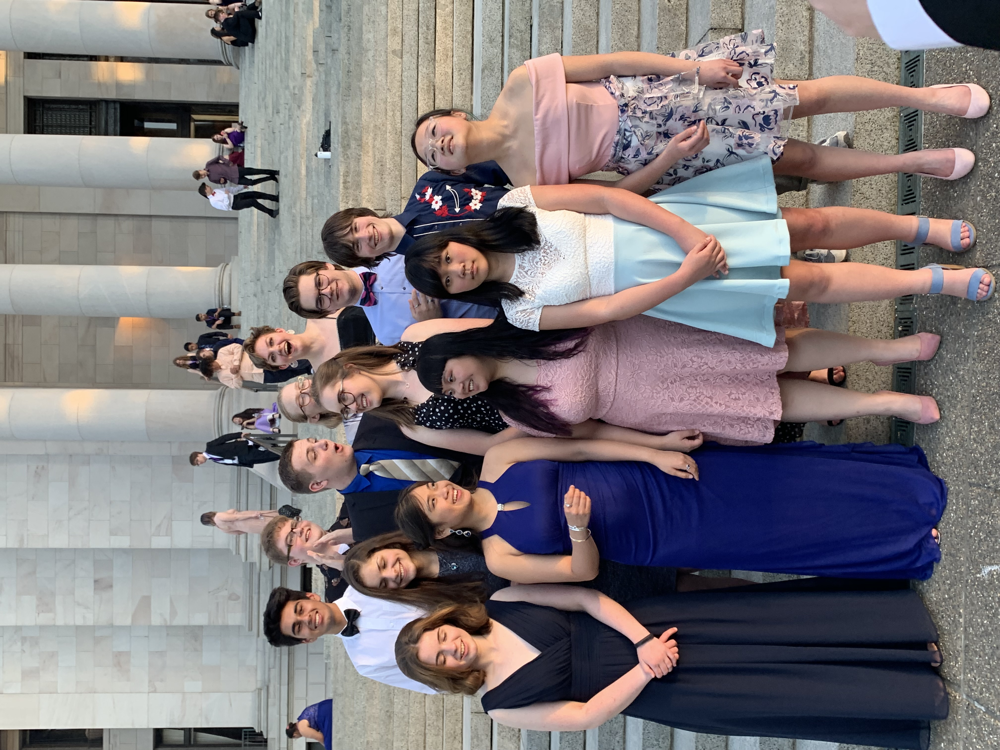

The YMCA’s Youth Legislature has played a critical role in my life. This program teaches youth about how their government functions. At the start of the school year, everyone prepares legislation ideas as they learnt research and develop their ideas. In May, delegations from around the state convene at the state capital to enact a full legislature. Students can sit in the Senate and House chambers proposing ideas they believe in. The session also runs elections where students elect their next Major Officers for the following year. In my junior year of the program, I ran for Governor against three other students and won against all odds. I was the first Youth Governor from the East side in 72 years of the program and I was the first Youth Governor to ever address the Washington State Senate, sharing this great program. My speech can be found here: Speech to the Senate. While I have graduated from this program, I am now an advisor.
